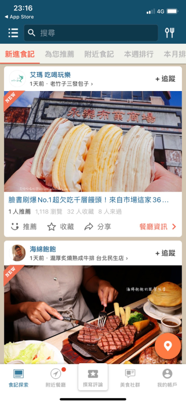
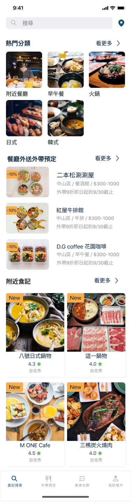
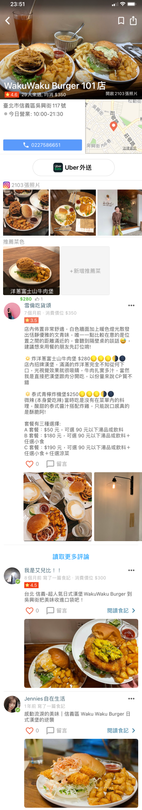
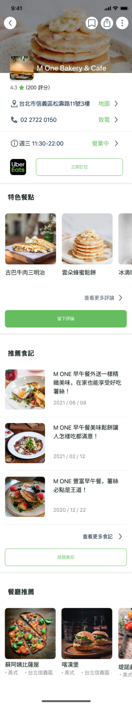

搜尋美食
搜尋結果和排行榜的評分排序，不知道它規則？
這是一個自主改善愛食記 App 的專案。我的目標是透過訪談新用戶和易用性測試後，改善愛食記的搜尋和投稿評論功能，以及重整它的資訊架構和餐廳內容頁，目的為提高新手用戶使用愛食記產品的頻率。
資訊架構和介面資訊的呈現是可以優化的目標。 新用戶使用APP搜尋食記時，會有以下問題：
搜尋結果和排行榜的評分排序，不知道它規則？
首頁的食記探索，提供的預設食記無法滿足我的探索，食記地區和類型沒有我有興趣的。
APP內的主要操作按鈕沒有一致性，分不清是可點擊進入下一層資訊還是純文字顯示？
透過使用者訪談目標-新手用戶和易用性測試原本APP，發現以下共通的特性：
1.觀看瀏覽食記的最終目的是為了要訂餐或者訂位。
2.對於食記和食物照片非常重視，如果有引發興趣才會繼續觀看文字。
3.網路食記和實際體驗感受會分開處理，對於實際落差保持平常心。
1.交通距離影響決定餐廳和餐點的比重大。
2.對於餐廳的資訊除了照片，再來會參考評價和留言數。
1.雖然不會特地追蹤美食部落客，但是當要選擇餐廳或者餐點的時候，部落客的文章是一個重要的參考指標。
2.對於食記和食物照片非常重視，如果有引發興趣才會繼續觀看文字。
3.網路食記和實際體驗感受會分開處理，對於實際落差保持平常心。
首頁新增了熱門分類提供更多即時的餐廳選擇。新增餐廳外送外帶預定，讓用戶可以知道目前有哪些提供外帶和外送便當的選擇。
Before
After
餐廳資訊頁重整，上半部除了基本資訊外，另外再提供內用訂位和外送的選項，協助合作夥伴商家持續經營。 針對特色餐點照片吸引用戶到訪，且希望用戶留下更多關於餐廳的評論數內容。
Before
After
介面改版後的測試任務報告
(Maze report 目前僅支援桌面型)